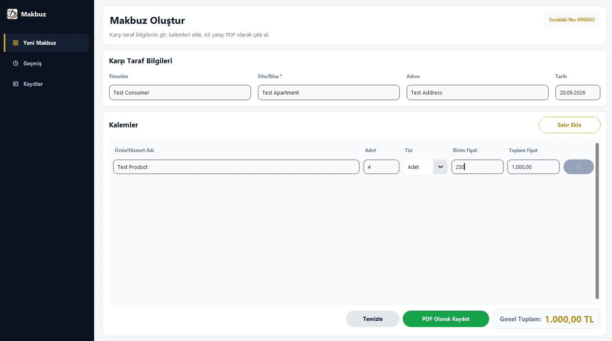
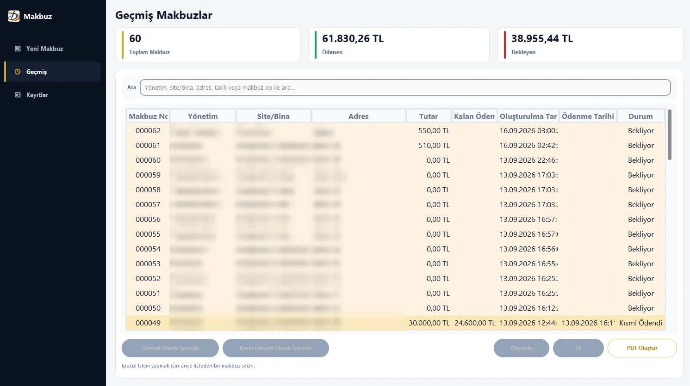
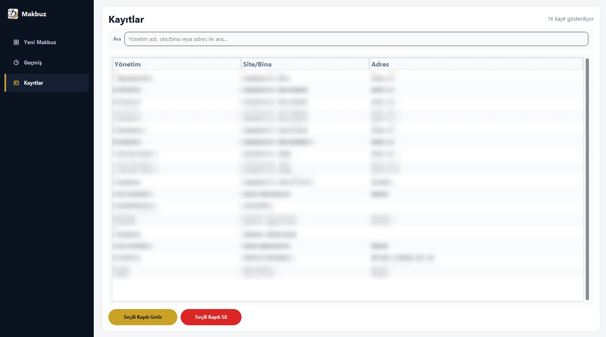

a small retail business doesn't want a web app it has to keep alive. it wants something it double-clicks that never loses a sale. i built two Python desktop apps for one shop, and they taught me different things. they're client projects, so this is a tour of the decisions, not the code.
##the ledger: don't lose the data
the first app covers the day-to-day of the shop, backed by a local SQL database: inventory and stock, point-of-sale transactions for both cash and credit sales, customer accounts and payment tracking, daily earnings and expense logging, and PDF customer statements you can export.
with an app like this, the database file is the business, which drove two decisions. the first is a layered architecture that keeps data access, business logic and the UI separate, so changing a screen can't quietly break how a sale gets recorded. the second is an automatic backup every time the app starts. there's no schedule to configure or forget, the app just does it every time it opens.
it's a plain desktop app on purpose: for a single shop, a local database and a reliable backup beat anything that needs a server to stay up.
##the receipt app: same output every time
the second app is narrower. it produces receipts that look official, and it has to produce them the same way every time. you pick or type a customer, add line items (name, quantity, unit, price) and it writes a PDF. the interface is customtkinter, the PDFs are drawn with PyMuPDF, and PyInstaller packages it as a folder with an exe, so the shop installs nothing. there are three screens: new receipt, history, and saved customers.



##a pdf that grows to fit
every receipt is drawn onto two fixed template halves, the header on top and the totals box at the bottom, with the middle generated. the height of the middle is computed from the items, and the page is simply the three parts stacked.
middle_height = max(min_height, top_padding + content_height + bottom_padding)
total_height = top_height + middle_height + bottom_heightcontent_height comes from wrapping each row's text by measuring its real width in the embedded font instead of counting characters:
candidate = f"{current} {piece}"
if font.text_length(candidate, fontsize) <= max_width:
current = candidate # still fits on this line
else:
lines.append(current) # start a new line
current = pieceTurkish characters need a real TrueType font embedded in the PDF, so the app looks for one in the Windows font folder once, caches the answer, and warns the user instead of quietly printing question marks.
##turkish is where the standard library stops helping
Python's upper() and lower() turn i into I and I into i, which is wrong in Turkish, where İ and ı are different letters. the app has its own casing helpers, and the history search folds case the Turkish way.
_TR_UPPER_MAP = str.maketrans({"i": "İ", "ı": "I"})
_TR_LOWER_MAP = str.maketrans({"İ": "i", "I": "ı"})
def tr_upper(text): return text.translate(_TR_UPPER_MAP).upper()
def tr_lower(text): return text.translate(_TR_LOWER_MAP).lower()| input | python default | turkish-aware |
|---|---|---|
upper of iş | IŞ | İŞ |
lower of ISPARTA | isparta | ısparta |
| title case of istanbul | Istanbul | İstanbul |
amounts are shown as 1.234,50 TL and parsed back from the same format. formatting swaps the separators through a placeholder so the two replacements don't step on each other:
text = f"{quant:,.2f}" # 1,234.50
text = text.replace(",", "§").replace(".", ",").replace("§", ".") # 1.234,50every receipt also carries its total in words ("yazı ile tutar"), so there's a number-to-words converter for Turkish, from lira down to kuruş. 1234.50 becomes "Bin İki Yüz Otuz Dört Türk Lirası Elli Kuruş". line totals and sums are computed with Decimal and half-up rounding, never floats.
##numbering and payments
receipt numbers are sequential and kept in a one-row table. the app reads the next number, draws the PDF, and only commits the number after the file was written, so a failed export doesn't burn a number, and editing an old receipt keeps its own.
receipt_no = db.get_next_receipt_no() # read it, don't spend it yet
ok = render_receipt_pdf(...) # draw and save the file
if ok:
db.commit_receipt_no(receipt_no) # only now the number is used upeach receipt is paid, partially paid or unpaid, and partial payments store the amount, so the remaining balance is always known. from the history screen you can export a summary PDF for one customer with paid and remaining amounts per receipt, optionally only the unpaid ones.
two small rules that saved me trouble. timestamps are always stamped in GMT+3, whatever the computer's timezone is set to, so a wrong setting can't shift a receipt's date. and the database is one long-lived SQLite connection in WAL mode, with every write in its own transaction.
none of it is complicated on its own. the point is the boring guarantees: nothing lost, the same layout, the next number, the right total.